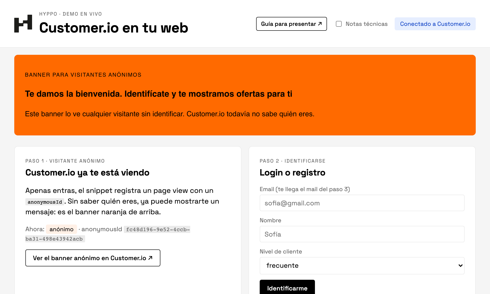
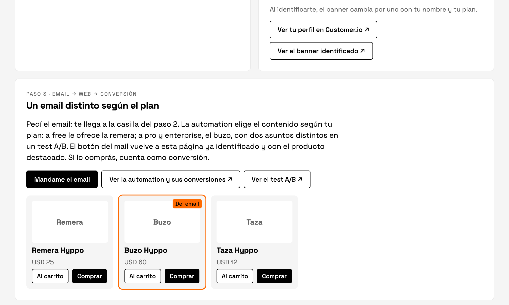
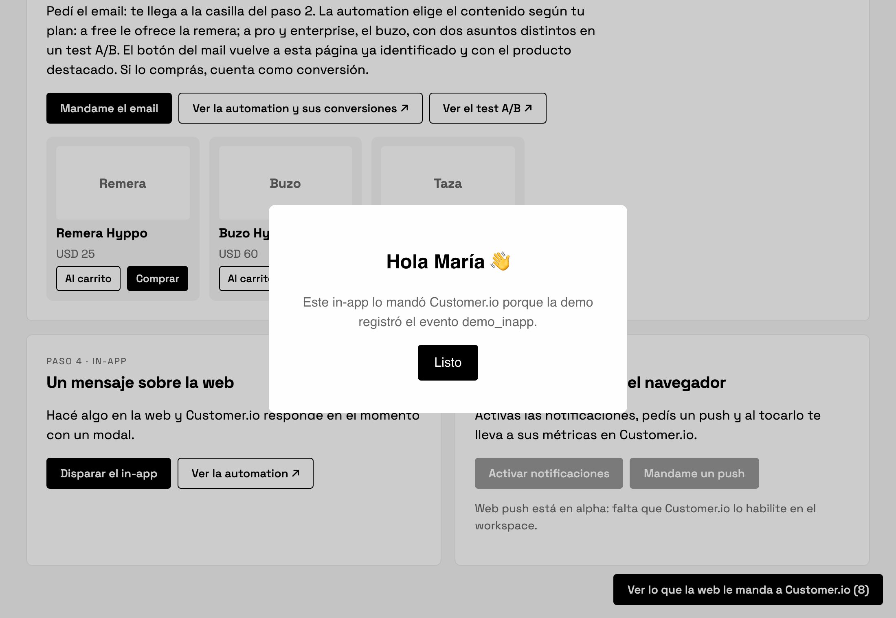

Antes de la reunión
- La demo se presenta después de la landing Customer.io y GoChat, que termina con un link acá. Sigue la misma historia: usá "Sofía" como nombre y un nivel de cliente (nuevo o frecuente).
- Abrí la demo en el navegador que vas a compartir y bajá el bloqueador de anuncios para el sitio (Brave Shields, uBlock). Si está activo, arriba a la derecha dice "Bloqueado".
- Hacé el recorrido una vez con tu email. El in-app tarda hasta un minuto en llegar la primera vez a cada navegador; después es instantáneo.
- Abrí el panel de abajo a la derecha y tocá Empezar de nuevo para arrancar la reunión como visitante anónimo.
- Dejá Customer.io abierto y logueado en otra pestaña: los links "↗" de cada paso abren ahí.
- Tené a mano tu casilla de email para el paso 3.
La demo usa el workspace "Hyppo" (186015). Todo lo que pase en la reunión queda en ese workspace, con perfiles demo-….
Paso 1 · Visitante anónimo
"Customer.io te reconoce antes de saber quién sos"

- Qué decir
- Apenas alguien entra a la web, Customer.io le asigna un ID anónimo y ya puede mostrarle mensajes. Este banner lo ve cualquier visitante, sin login.
- Qué hacer
- Señalá el banner naranja. Para mostrar lo técnico, abrí el panel con el botón de abajo a la derecha: el page view ya salió. Arranca minimizado y se cierra con el "—".
- Qué mostrar en Customer.io
- "Ver el banner anónimo ↗": el broadcast, sus vistas y su conversión (que el visitante se identifique).
Paso 2 · Identificarse
"Cuando se registra, el mensaje cambia solo"

- Qué decir
- Al loguearse, todo lo que hizo como anónimo pasa a su perfil. El banner se arma con sus datos: si cambia el nivel de cliente, cambia el mensaje.
- Qué hacer
- Completá email, nombre y nivel de cliente y tocá "Identificarme". La página avisa y se recarga en 15 segundos con el banner azul, que queda hasta que lo cerrás con la ✕.
- Qué mostrar en Customer.io
- "Ver tu perfil ↗": el perfil recién creado, con los atributos y la actividad de antes de identificarse. "Ver el banner identificado ↗": la automation que lo manda.
Paso 3 · Email → web → conversión
"Un email distinto para cada cliente, que trae ventas y se puede medir"


- Qué decir
- Una acción en la web dispara un email, y Customer.io elige qué mandar según el nivel de cliente: a los nuevos les ofrece la remera; a los frecuentes, el buzo. Encima, el email del buzo está en un test A/B de asunto: la mitad recibe uno y la mitad otro, y Customer.io dice cuál vende más. El link vuelve a la web reconociendo a la persona, aunque abra el mail en otro dispositivo.
- Qué hacer
- "Envíame el email", abrí el mail (llega en uno o dos minutos), tocá el botón y comprá el producto destacado. Para mostrar las dos ramas, identificate primero como frecuente y después, con otro email, como nuevo.
- Carrito abandonado: tocá "Al carrito" en el buzo y seguí con los pasos 4 y 5; al minuto llega el email "Buzo Hyppo sigue en tu carrito". Para mostrar la salida, agregá la remera y comprala antes de que pase el minuto: en la automation se ve que la persona salió por conversión y el email no salió. La frase: "se frena solo si compra".
- Qué mostrar en Customer.io
- "Ver la automation ↗": la rama por nivel, el test y las conversiones de cada email. "Ver el test A/B ↗": los dos asuntos, cuánta gente recibió cada uno y las compras de cada lado. "Ver el carrito abandonado ↗": la espera de 1 minuto, el email y la salida por compra.
Paso 4 · In-app
"Responder en el momento, dentro de la web"

- Qué decir
- Cualquier evento de la web puede disparar un mensaje en pantalla, sin tocar código: el marketing lo arma en Customer.io.
- Qué hacer
- "Disparar el in-app": aparece un modal en unos segundos.
- Qué mostrar en Customer.io
- "Ver la automation ↗": el trigger por evento y el mensaje.
Paso 5 · WhatsApp con GoChat
"El mismo journey sigue por WhatsApp, y el agente sabe con quién habla"
- Qué decir
- Es el día 2 de la historia de Sofía en la landing: Customer.io manda una plantilla de WhatsApp por GoChat con el producto que le corresponde. El botón vuelve a la web identificada y la compra cuenta como conversión. Si responde, el agente de IA ya tiene su nombre, su nivel y el producto, y lo que pasa en el chat vuelve al perfil.
- Qué hacer
- En el paso 2, pedile al cliente su WhatsApp o usá el tuyo: elegí el país en la bandera (arranca en el país de la compu) y escribí el número como lo dicta, la página lo valida y agrega el 9 de los celulares argentinos. Después identificate. Después "Envíame un WhatsApp": llega en unos segundos. Mostrá el botón "Ver producto" y respondé "Tengo una duda" para que conteste el agente.
- Qué mostrar en Customer.io
- "Ver la automation ↗": el webhook a GoChat y la conversión. "Ver tu perfil ↗" del paso 2: los eventos que mandó GoChat desde el chat.
Paso 6 · Web push
"Y si no está en la web, le llega igual al navegador"
- Qué decir
- Con un clic, la persona acepta notificaciones y su navegador queda en el perfil como un dispositivo más. Desde ahí, cualquier journey le puede mandar un push, aunque tenga la pestaña cerrada.
- Qué hacer
- Con la persona ya identificada en el paso 2, "Activar notificaciones" y aceptá el permiso del navegador. Después "Envíame un push": llega en unos segundos. Tocalo y se abre el flujo de la automation en Customer.io.
- Qué mostrar en Customer.io
- "Ver la automation ↗": el trigger por evento y el push. "Ver tu perfil ↗" del paso 2: el navegador como dispositivo.
Si algo no aparece
- "Bloqueado" arriba a la derecha: bajá el bloqueador de anuncios y recargá.
- El in-app no llega: la primera vez en un navegador puede tardar un minuto. Mientras tanto, mostrá la automation en Customer.io.
- El banner azul no aparece, o muestra datos de una prueba anterior: cerralo con la ✕ y recargá: los banners de identificaciones anteriores salen de a uno, el más viejo primero. Si repetís la demo, conviene usar otro email.
- El WhatsApp no llega: revisá que el país de la bandera sea el del número. Meta no entrega plantillas de marketing a números de EE. UU. ni a quien recibió muchas hace poco: probá con tu número.
- "Registration failed - push service error" al activar notificaciones: es Brave, que trae el push apagado. Activá "Use Google services for push messaging" en
brave://settings/privacyy reiniciá Brave, o presentá desde Chrome. - El push no llega: revisá que el navegador y el sistema operativo permitan notificaciones de Chrome (en macOS, Configuración del Sistema → Notificaciones) y que no esté activado No molestar. Si el permiso quedó bloqueado, habilitalo desde el candado de la barra de direcciones.
- El email no llega: buscalo en spam; el remitente es
hello@hyppo.io.